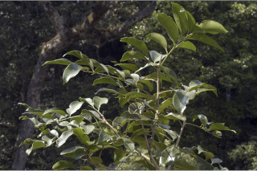
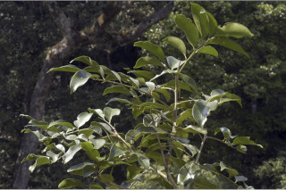

Large trees, up to 30 m tall.
30 ಮೀ. ಎತ್ತರದವರೆಗೆ ಬೆಳೆಯುವ ದೊಡ್ಡ ಗಾತ್ರದ ಮರಗಳು.
Large trees, up to 30 m tall.
மிகப்பெரிய மரம், up முதல் 30 மீ. உயரம் வரை வளரக்கூடியது.
Bark smooth, pale brown; blaze yellowish
ತೊಗಟೆ ತೆಳು ಕಂದು ಬಣ್ಣದಲ್ಲಿದ್ದು ನಯವಾಗಿರುತ್ತದೆ;ಕಚ್ಚು ಮಾಡಿದ ಜಾಗ ಹಳದಿ ಬಣ್ಣದಲ್ಲಿರುತ್ತದೆ.
Bark smooth, pale brown; blaze yellowish
மரத்தின் பட்டை வழவழப்பானது, வெளிறிய ப்ரவுன் நிறமானது; உள்பட்டை மஞ்சள் நிறமானவை
Young branchlets stout, subterete, minutely pubescent.
ಕಿರುಕೊಂಬೆಗಳು ಉಪ-ದುಂಡಾಗಿರುತ್ತವೆ ಮತ್ತು ಸೂಕ್ಷ್ಮವಾದ ರೋಮಗಳಿಂದ ಕೂಡಿರುತ್ತವೆ.
Young branchlets stout, subterete, minutely pubescent.
சிறியநுனிக்கிளைகள் தடித்தவை, குறுக்குவெட்டுத் தோற்றத்தில் வளையமானது, சிறிய உரோமங்களுடையது.
Leaves compound, imparipinnate, to 18 (-22) cm long, alternate, spiral, pulvinate; rachis 12 cm long, triangular; petiolule 0.4-1 cm long; leaflets 3-4 pairs, subopposite or alternate, 7-15 x 3-6 cm, narrow oblong-elliptic, apex acuminate, base asymmetric - attenuate, margin entire, thinly coriaceous, glabrous; midrib raised above; secondary_nerves 8-13 pairs; tertiary_nerves broadly reticulate.
ಎಲೆಗಳು ಸಂಯುಕ್ತ, ಅಸಮ ಗರಿ ರೂಪಿಗಳಾಗಿದ್ದು 18(-22) ಸೆಂ.ಮೀ.ವರೆಗಿನ ಉದ್ದವಿರುತ್ತವೆ, ಜೋಡನೆಯಲ್ಲಿ ಪರ್ಯಾಯ ಮತ್ತು ಸುತ್ತು ವ್ಯವಸ್ಥೆ ಮಾದರಿಯಲ್ಲಿದ್ದು ಉಬ್ಬಿದ ಎಲೆ ಬುಡವನ್ನು ಹೊಂದಿರುತ್ತವೆ; ನಡುಕಾಂಡ 12 ಸೆಂ.ಮೀ. ಉದ್ದ ವಿದ್ದು ತ್ರಿಕೋನಯುಕ್ತವಾಗಿರುತ್ತದೆ; ಕಿರು ತೊಟ್ಟುಗಳು ಅಂದಾಜು 0.4-1 ಸೆಂ.ಮೀ. ಉದ್ದವಿರುತ್ತವೆ;ಕಿರುಪತ್ರಗಳು 3-4 ಜೋಡಿಗಳಿದ್ದು ಉಪ-ಅಭಿಮುಖಿ ಅಥವಾ ಪರ್ಯಾಯ ರೀತಿಯಲ್ಲಿ ಜೋಡಿತಗೊಂಡಿರುತ್ತವೆ ಮತ್ತು 7 -15 X 3- 6 ಸೆಂ. ಮೀ. ಗಾತ್ರ,ಸಂಕುಚಿತ -ಚತುರಸ್ರದ ಆಕಾರ, ಕ್ರಮೇಣ ಚೂಪಾಗುವ ತುದಿ,ಅಸಮವಾದ ಮತ್ತು ಒಳಬಾಗಿದ ಬುಡ,ನಯವಾದ ಅಂಚು,ತೆಳುವಾದ ಚರ್ಮದ ಮೇಲ್ಮೈ ಹೊಂದಿದ್ದು ರೋಮರಹಿತವಾಗಿರುತ್ತವೆ;ಮಧ್ಯನಾಳ ಪತ್ರದ ಮೇಲ್ಭಾಗದಲ್ಲಿ ಮೇಲೆದ್ದಿರುತ್ತದೆ; ಎರಡನೇ ದರ್ಜೆಯ ನಾಳಗಳು 8 ರಿಂದ 13 ಜೋಡಿಗಳಿರುತ್ತವೆ;ಮೂರನೇ ದರ್ಜೆಯ ನಾಳಗಳು ವಿಶಾಲ ಜಾಲಬಂಧ ನಾಳ ವಿನ್ಯಾಸದಲ್ಲಿರುತ್ತವೆ.
Leaves compound, imparipinnate, to 18 (-22) cm long, alternate, spiral, pulvinate; rachis 12 cm long, triangular; petiolule 0.4-1 cm long; leaflets 3-4 pairs, subopposite or alternate, 7-15 x 3-6 cm, narrow oblong-elliptic, apex acuminate, base asymmetric - attenuate, margin entire, thinly coriaceous, glabrous; midrib raised above; secondary_nerves 8-13 pairs; tertiary_nerves broadly reticulate.
கூட்டிலை, ஒற்றைபடை சிறகு வடிவக்கூட்டிலைகள், 18 (-22) செ.மீ. நீளமானது, மாற்றுஅடுக்கமானவை, சுழல் போல் அமைந்தது, பல்வினேட்; மத்தியகாம்பு 12 செ.மீ. நீளமானது, முக்கோண வடிவானது; சிற்றிலைக்காம்பு 0.4-1 செ.மீ. நீளமானது; சிற்றிலைகள் 3-4 ஜோடிகள், கிட்டத்தட்ட எதிரடுக்கமானவை அல்லது மாற்றுஅடுக்கமானவை, 7-15 X 3-6 செ.மீ., குறுகிய நீள்சதுர-நீள்வட்ட வடிவானது, அலகின் நுனி அதிக்கூரியது, அலகின் தளம் சமமற்றது-அட்டனுவேட், அலகின் விளிம்பு முழுமையானது, மெல்லிய கோரியேசியஸ், உரோமங்களற்றது; மையநரம்பு மேற்புறத்தில் அலகின் பரப்பைவிட உயர்ந்து இருக்கும்; இரண்டாம் நிலை நரம்புகள் 8-13 ஜோடிகள்; மூன்றாம் நிலை நரம்புகள் அகன்ற வலைப்பின்னல் போன்றவை.
Inflorescence axillary panicles; flowers white.
ಪುಷ್ಪಮಂಜರಿಗಳು ಅಕ್ಷಾಕಂಕುಳಿನಲ್ಲಿರುವ ಪುನರಾವೃತ್ತಿಯಾಗಿ ಕವಲೊಡೆಯುವ ಮಾದರಿಯಲ್ಲಿರುತ್ತವೆ;ಹೂಗಳು ಬಿಳಿ ಬಣ್ಣದವು.
Inflorescence axillary panicles; flowers white.
மஞ்சரி தண்டின் இலைக்கோணங்களில் காணப்படும் பேனிக்கிள்; மலர்கள் வெள்ளை நிறமானது.
Capsule, obovoid, 5.5 x 4.5 cm, reddish when ripe; seeds 4, dark purple with white aril.
ಸಂಪುಟ ಫಲ ಬುಗುರಿಯಾಕಾರದಲ್ಲಿದ್ದು5.5 X4. 5 ಸೆಂ.ಮೀ. ಗಾತ್ರವಿದ್ದು ಕಳಿತಾಗ ಕೆಂಪು ಬಣ್ಣದಲ್ಲಿರುತ್ತದೆ; ಬೀಜಗಳು 4 ಇದ್ದು ಕಡು ಕೆನ್ನೀಲಿ ಬಣ್ಣ ಹೊಂದಿದ್ದು ಬಿಳಿ ಪತ್ರೆ ಸಮೇತವಾಗಿರುತ್ತದೆ.
Capsule, obovoid, 5.5 x 4.5 cm, reddish when ripe; seeds 4, dark purple with white aril.
வெடிகனி (கேப்சியூல்), தலைகீழ் முட்டை வடிவம் , 5.5 X 4.5 செ.மீ., கனியும் போது சிவப்பு நிறமானது ; விதைகள் 4, கரும்பர்புள் நிறமானது, வெள்ளை நிறமான பத்ரி (ஏரில்) உடையது.
 
